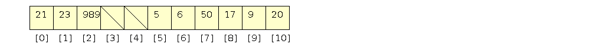

15: hashing
Introduction | Hash Functions | Open Addressing | Coalesced Hashing
Hashing Introduction
With hashing we can create an associative container that has amortized O(1) insertion and lookup when the container is relatively empty.
- We can use integer keys and modulus as a hash function
- Inserting: 5, 6, 50, 17, 9, 20, 21, 23, 989
- I chose a prime number for the hash table size so there are less collisions
(This is called separate chaining)
Insertion
- Compute the index from hash(key)
- Take a pointer to the head of the list
- Make a new node in the linked list and set the next to the head
- Make the head point to the new node
Deletion
- Compute the index from hash(key)
- Search the linked list to find the prev and next of the curr
- Use regular linked list removal
Hash Functions
Below are some hash functions:
Shift Folding
Take parts of the key and add them together:
- A social security number (123-45-6789) can be divided into three parts and added
- 123 + 45 + 6789 = 6957
- Then you can take the modulus of the table size
Boundry Folding
- The key is again divided into parts, but every other part is reversed
- (123-45-6789) = 123 + 54 + 6789 = 6966
- Again, then you can take the modulus of the table size
- Using bits that than actually reversing 456 is faster. Drozdek says you can XOR together the pieces to achieve this.
Mid-Square Function
- Take the key, square it, and take the middle bits
- With this hash function in practice it is okay to have a power-of-two sized hashtable
Extraction
- Take only some of the bits or digits in a key
- Maybe all student id's start with 999, use the rest of the id as the key
Radix Transformation
- Convert a number from one base to another and then use modulus
- You could represent a string of letters as a base26 number and convert to base10 and then take the modulus
Composite Object Hashing
- Start the hashcode at 1
- For each element in the composite object, multiply the hashcode by a small prime and add the element
- In the previous step, if the element is a composite object, add the hashcode of that composite object
int hashCode(){
int ret = 1;
ret = 31 * ret + number0;
ret = 31 * ret + number1;
ret = 31 * ret + nameString.hashCode();
ret = 31 * ret + array.hashCode();
return ret;
}
Open Addressing
We can use Linear Probing, Quadratic Probing or Double Hashing to get around having a linked list in the hash table.
A probing function looks like: norm(hash(key) + p(1)), norm(hash(key) + p2), norm(hash(key) + p3), ...
Linear Probing
In linear probing, the function is:
index(i) = mod(hash(key) + i), table_size)
Inserting:
- 5 -> 5 mod 11 = 5. Index 5 is open.
- 6 -> 6 mod 11 = 6. Index 6 is open.
- 50 -> 50 mod 11 = 6. Index 6 is full. Index 7 is open
- 17 -> 17 mod 11 = 6. Index 6 is full. Index 7 is full. Index 8 is open.
- 9 -> 9 mod 11 = 9. Index 9 is open.
- 20 -> 20 mod 11 = 9. Index 9 is full. Index 10 is open.
- 21 -> 21 mod 11 = 10. Index 10 is full. Index 0 is open.
- 23 -> 23 mod 11 = 1. Index 1 is open.
- 989 -> 989 mod 11 = 10. Index 10 is full. Index 0 is full. Index 1 is full. Index 2 is open.

Lookup of key in the table:
- Is 989 in the table?
- 989 mod 11 = 10. table[10] = 20. Go to next step of probe
- (10 + 1) mod 11 = 0. table[0] = 21. Go to next step of probe
- (10 + 2) mod 11 = 1. table[1] = 23. Go to next step of probe
- (10 + 3) mod 11 = 2. table[2] = 989. Yes, 989 is in the table
Lookup of key not in the table:
- Is 22 in the table?
- 22 mod 11 = 0. table[0] = 21. Go to next step of probe
- (0 + 1) mod 11 = 1. table[1] = 23. Go to next step of probe
- (0 + 2) mod 11 = 2. table[2] = 989. Go to next step of probe
- (0 + 3) mod 11 = 3. table[3] = uninitialized. No, 22 is not in the table
Deletion:
- You can't just remove an element from the table with open addressing
- This would cause a probe search to possibly stop prematurely
- You can mark a cell as deleted and if a search comes across a deleted cell, it won't stop there
- If you want to insert an you come across a cell marked as deleted, you can insert there
- After a while, if there are many deleted cells, you might want to rehash the table. This will cause performance to be a little unpredictable, which may not be allowed in some situations.
Quadratic Probing
In linear probing:
- Empty cells following clusters have a larger chance to be filled than other positions
- The larger a cluster grows, the more probability it has to grow even larger.
- When we are inserting and sorting this translates into increase the time to make it much more linear than constant. (It is like increasing the linked list length in chaining.
Quadtratic Probing Has the Following Formula for the Probe:
- p(i) = hash(key) + (-1)^(i-1) * ((i + 1) / 2)^2 for i=1,2,...,TableSize-1
Or as a sequence of probes:
- hash(key) + i^2, hash(key) - i^2 for i=1,2,...,TableSize-1
This leads to the sequence:
- hash(key), hash(key) + 1, hash(key) - 1, hash(key) + 4, hash(key) - 4, ...
Inserting:
- 5 -> 5 mod 11 = 5. Index 5 is open.
- 6 -> 6 mod 11 = 6. Index 6 is open.
- 50 -> 50 mod 11 = 6. Index 6 is full. 6+1=7 is open.
- 17 -> 17 mod 11 = 6. Index 6 is full. 6+1=7 is full. 6-1=5 is full. 6+4=10 is open.
- 9 -> 9 mod 11 = 9. Index 9 is open.
- 20 -> 20 mod 11 = 9. Index 9 is full. 9+1=10 is full. 9-1=8 is open.
- 21 -> 21 mod 11 = 10. Index 10 is full. 10+1=0 is open.
- 23 -> 23 mod 11 = 1. Index 1 is open.
- 989 -> 989 mod 11 = 10. Index 10 is full. 10+1=0 is full. 10-1=9 is full. 10+4=3 is open.
- Quadratic probing gives better results than linear probing because clusters don't build up as much.
- But with keys that hash to the same index, clusters will still occur. These are called secondary clusters.
- Double Hashing tries to get rid of secondary clusters
Double Hashing
Double Hashing eliminates secondary clusters (this was found experimentally).
- We choose the probing sequence to be dependent on the key, so different keys hashing to the same original index have different sequences
- When choosing the second hash function, we have to make sure that it never evaluates to zero, or there will be an infinite loop
- Sedgewick says: "One way to enforce this it to make the table_size a prime number and make hashtwo return values less than the prime. In practice the following simple hashtwo function will work when table_size is not small."
1:
2:
3:
int
hashtwo(
int
key)
{
4:
return
(
key
%
97)
+
1;
5:
}
Probing sequence
- i = hash(key)
- k = hashtwo(key)
- i = (i + k) % table_size
Coalesced hashing
Coalesced hashing maintains a linked list in a different way than separate chaining. In Coalesced hashing each array element has a key and link associated with it. The list nodes are "allocated" by choosing the last available position in the table.
Insertion:
- 5 -> 5 mod 11 = 5. Index 5 is open.
- 6 -> 6 mod 11 = 6. Index 6 is open.
- 17 -> 17 mod 11 = 6. Index 6 is full. Put into index 10 and set index 6 ptr to 10.
- 9 -> 9 mod 11 = 9. Index 9 is open.
- 20 -> 20 mod 11 = 9. Index 9 is full. Put into index 8 and set index 9 ptr to 8.
- 21 -> 21 mod 11 = 10. Index 10 is full. Put into index 7 and set index 10 ptr to 7.
- 23 -> 23 mod 11 = 1. Index 1 is open.
- 50 -> 50 mod 11 = 6. Index 6 is full. Follow index 6 ptr to 10. Index 10 is full. Follow index 10 ptr to 7. Put 50 in index 4 and set index 7 ptr to 4.
- 989 -> 989 mod 11 = 10. Index 10 is full. Follow index 10 ptr to 7, Follow index 7 ptr to 4. Put 989 in index 3 and set index 4 ptr to 3.
LinkedHashMap
In Java there is a collection that keeps a linked list of the elements as they are inserted.
This allows for traversal in the order of insertion.
References
- Sedgewick, Algorithms in C++, Parts 1-4, page 608.
- Cormen, Leiserson, Rivest, Stein, "Introduction to Algorithms", Second Edition. pages 245 to 249
- http://videolectures.net/mit6046jf05_leiserson_lec08/